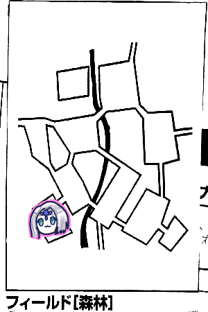

ここ、しっかりレポート書いたはずなんですがなんもデータ残ってないです。かなしいなあ。
概要としては、セズウィック村に冒険者ギルドか何かを設立するために指導者を招く回でした。
指導者はドワーフのシドとルンフォのケイトから選択できて、我々はシドを選択しました。以後、GMからは「シドを選んだパーティー初めて見た」と何度か言われることになります。

山岳の#8ででブルーローズが「こんなところに主がいるはずありませんわ！」って言ったらラプテラスが飛んでくるなどの事故が発生したりしました。

山岳→森林の入口は#8です。ここでいきなり戦闘になって山岳の木こりの集落にとんぼ返りしたりしました。
#10には小さな泉があり、前回エターナルの場所を教えてくれたプーカと、リモという娘がいました。このリモもプーカなんですかね。ちなみにプーカは小さな子どもの姿をしているらしいですよ。動物にも化けられるようですが。
このプーカにシドの居場所を聞きます。小屋が#6にあることを教えてもらいました。
主の場所を聞くと、ブルーローズが「ここにはいない」と言っていた場所にいることが分かりました。
#1は薬草の宝庫で#2から洞窟を抜けて行くことができるが、そこに大きな蛇がいていけなくなったから倒して欲しいと依頼を受けました。アーボかな？とか言われてました。
また、ラプロアの実を3つ要求されました。
話すことが多い。
その割にはこれらの依頼はリアルタイムで4年ぐらい忘れ去られることになったのです…

シドの小屋に行くと、森の北側に狩りに行くのでしばらく戻らないと張り紙がありました。
探索してみたところ探索結果表で6ゾロを叩き出し、遺跡を見つけました。これはエターナルの5都とは違うもののようです。
あとここに来るまでの道中でブルーローズが命のリボンを森林イベントの草に盗まれたようです。これはエターナルの調査にあたってローレンスさんからもらったものだったんですが、これがないと全滅した時に助からないのですが…
結局どこだったのかわかりませんが多分#4でシドを見つけました。
プーカをかばいながら蛮族と戦っていたので2人を奴らから引き剥がした上で倒しました。
シドは快く指導者を引き受けてくれました。めでたしめでたし。